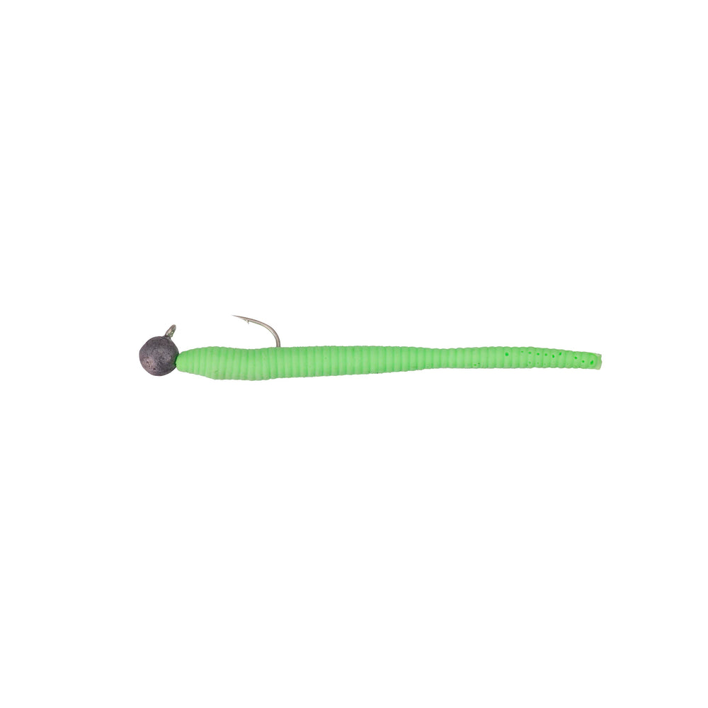
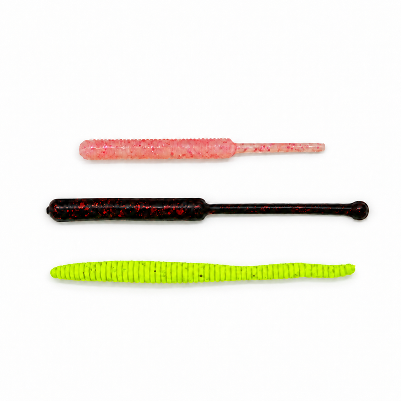
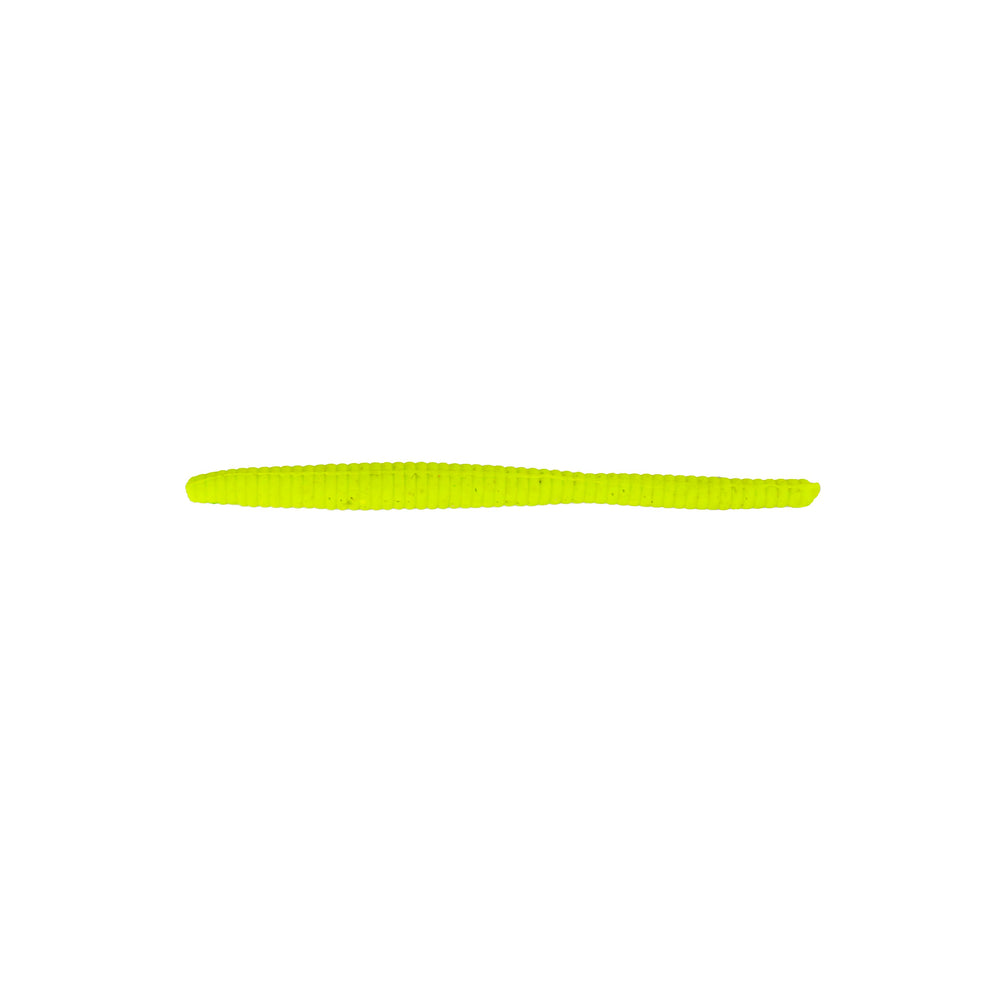
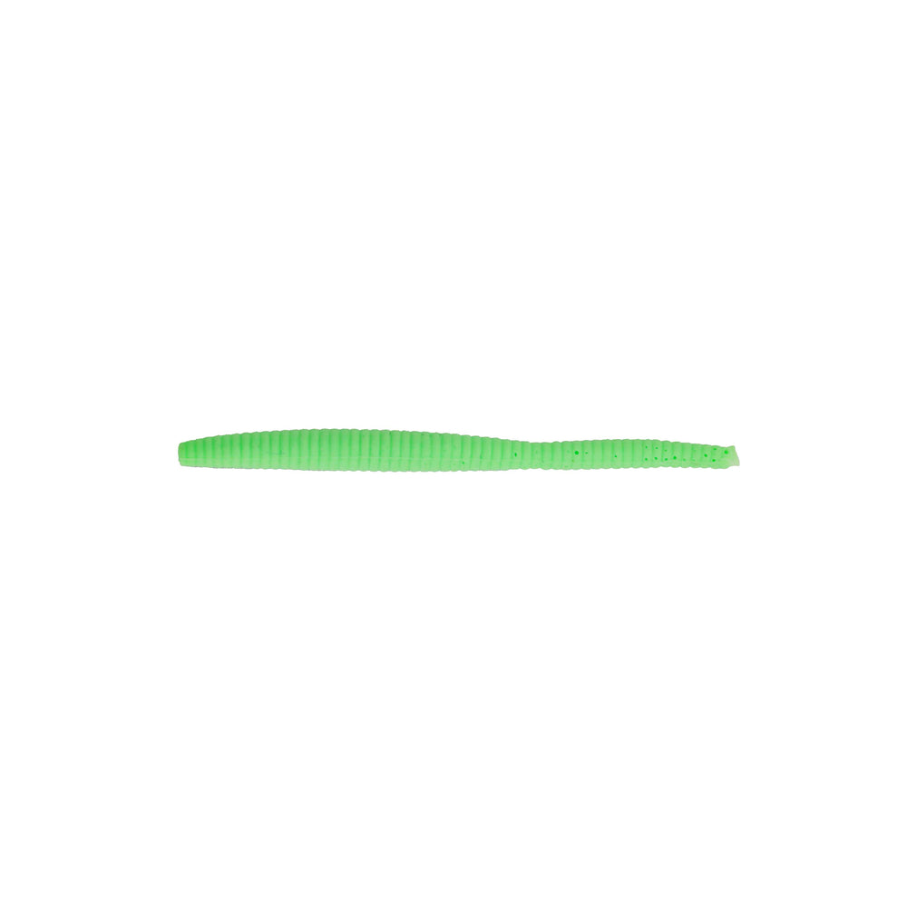
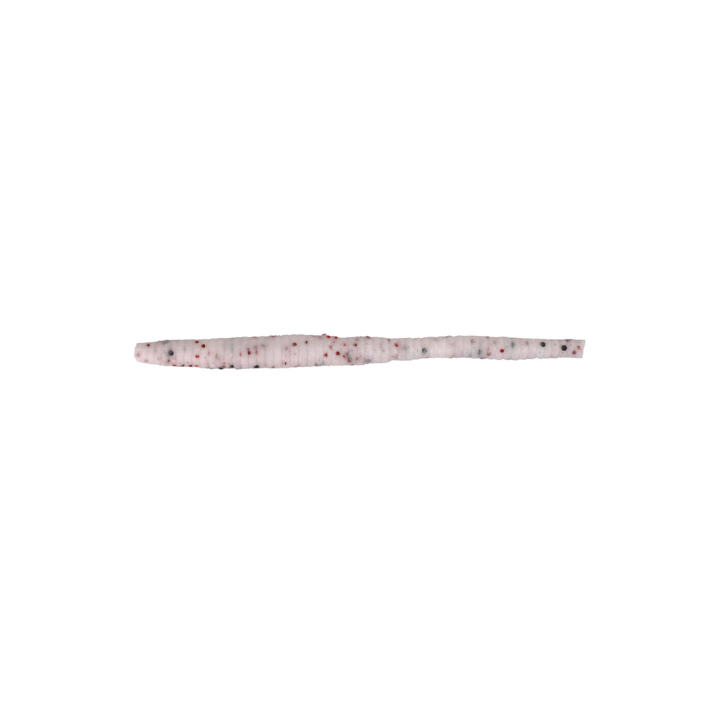
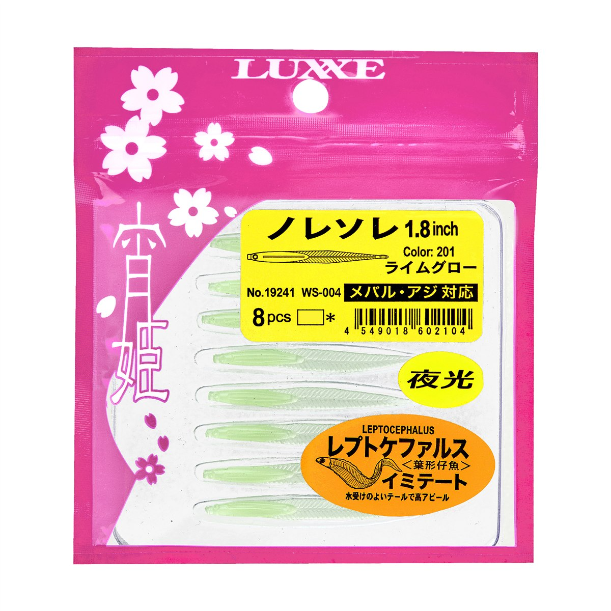

ガルプ！ソルトウォーター フローティングライトクローラー2.5インチ
（Gulp! Floating Light Crawler2.5inch）
ガルプ！ソルトウォーター フローティングライトクローラー2.5インチは、バークレイの「ガルプ！」シリーズから出た、浮力のあるライトゲーム用ワームです。キャッチコピーは「浮力で、漂わせる。浮力で、喰わせる。」
匂いで魚を寄せるガルプ！の素材はそのままに、ボディに浮力を持たせて、潮に乗せてふわふわ漂わせられるのが最大の特徴。アジングやメバリングで、違和感なく吸い込ませたい時に頼れるワームです。

画像出典:Berkley公式HP
スペック
- メーカー
- バークレイ（Berkley／ピュア・フィッシング・ジャパン）
- タイプ
- フローティングワーム（ストレート系）
- サイズ
- 2.5インチ
- 入数
- 20本
- カラー
- 全8色
- ターゲット
- アジ・メバルなど
- 価格
- 1,430円（税込）
- 発売
- 2026年11月
▼今すぐチェック
フローティングライトクローラーの特徴
浮力で、漂わせる。浮力で、喰わせる。
-
ボディの浮力で漂わせやすい
ボディに浮力を持たせることで、水中で漂わせやすく、水平の姿勢をキープしやすい設計。これまでジグヘッドの重さで調整していた沈む速さや潮なじみを、ワーム自体の浮力でもコントロールできる。
-
匂いで寄せて食わせるガルプ！素材
味と匂いの成分「フォーミュラ」と、水になじみやすい素材で、広い範囲の魚にアピールする。匂いで寄せて確実に食わせる、ガルプ！ならではの集魚力。
-
吸い込みやすくショートバイトも掛かる
軽やかな水中の姿勢で、魚がワームを吸い込むのをじゃましにくい。アタリが小さいショートバイトでも、しっかりフッキングまで持ち込みやすい。
フローティングライトクローラーの使い方
軽めのジグヘッドに付けてキャストし、潮の流れに乗せてゆっくり沈めながら、ワームを潮に漂わせる時間を長くとるのが基本です。浮力のあるワームなので、同じジグヘッドでも沈むのがゆっくりになり、アジやメバルに長く見せられます。
ただ巻きやリフト＆フォールでも使えます。フォールの途中や、巻くのを止めた時に食ってくることが多いので、ラインの動きにも注意しましょう。


※下の画像は、上からベビーサーディン、ミドルサーディン、フローティングライトクローラー。
画像出典:Berkley公式HP
フローティングライトクローラーの得意な状況
潮がゆるく流れている時や、アジ・メバルが浮いていて、ゆっくりした誘いにしか反応しない時に出番です。
浮力でふわっと漂い、魚に違和感を与えにくい姿勢で見せられるのが強み。アタリはあるのに乗らない時や、ショートバイトが続く時に投げると釣れる1本です。
ワンポイント
浮力があるぶん、いつものワームと同じジグヘッドでも沈むのが遅くなります。まずはいつもと同じ重さで試し、底や狙うレンジに届きにくい時だけジグヘッドを少し重くすると、漂わせる良さを残したまま使えます。
人気カラー
フローティングライトクローラーの人気カラーを紹介します。

チャートリュース目立つ黄緑色。濁り潮や常夜灯の下でアピールしたい時に。

グローライム光を蓄えて光るグロー系のライム。夜釣りや暗い時間帯に。

ホワイトバックレッドシルバー白いボディに赤と黒のラメ入り。シラスなど白っぽいベイトを食べている時に。
バブルガムピンク
目立つピンク。アジング・メバリングの定番カラーで、迷った時の1本目に。
※全8色。ほかにフロセントオレンジ・フロセントレッド・ブラウン・オリーブグリーンがあります。
画像出典:Berkley公式HP
▼今すぐチェック
フローティングライトクローラーに似ているルアー
-
 げっかびじん アジングビーム2.0
ダイワ
詳細はこちら＞
げっかびじん アジングビーム2.0
ダイワ
詳細はこちら＞
アジングワームの定番。沈むワームと使い分けるなら。
-

よいひめ ノレソレ1.8インチ がまかつ 詳細はこちら＞フラットテールのマイクロベイト系ワーム。メバル・アジに。
-
 あじどうワーム ゼロレジスト
メジャークラフト
詳細はこちら＞
あじどうワーム ゼロレジスト
メジャークラフト
詳細はこちら＞
水の抵抗を受けにくいアジングワーム。漂わせ方を比べるなら。